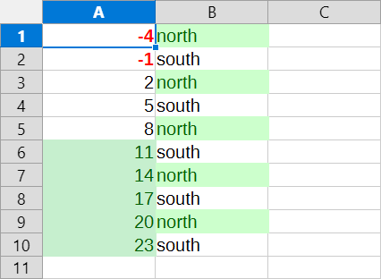
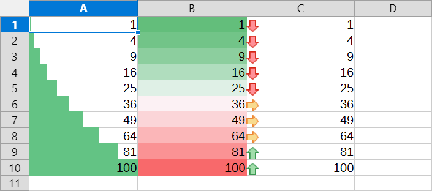

Conditional formats
setConditionalFormat makes the rules of LibreOffice's Format ▸ Conditional menu: conditions that apply a cell style when they hold, and data bars, colour scales and icon sets.
Conditions
using OpenDocumentSpreadsheets
xf = newods("Sales")
sh = xf["Sales"]
for i in 1:10
sh[i, 1] = i * 3 - 7
sh[i, 2] = isodd(i) ? "north" : "south"
end
setConditionalFormat(sh, "A1:A10", :cellIs; operator = "greaterThan", value = "10",
dxStyle = "greenfilltext")
setConditionalFormat(sh, "A1:A10", :cellIs; operator = "lessThan", value = "0",
font = ["color" => "red", "bold" => "true"])
setConditionalFormat(sh, "B1:B10", :containsText; value = "north", style = "Good")
The conditions are:
- comparisons (
:cellIs), top and bottom ranks (:top10), above and below average; - text that contains, doesn't contain, begins or ends with a value;
- date periods (today, last week, this month, this year, …);
- blanks, errors, unique and duplicate values;
- formulas (
:expression).
A condition's format is a cell style:
styleapplies a style you already have, or one of LibreOffice's built-in styles (style = "Good").dxStyle(a preset such as"redfilltext") or a customfont,fill,borderorformatmakes a style of the rule's own,ConditionalStyle_1,ConditionalStyle_2and so on, which the Styles deck lists.
Conditions set on the same range become one conditional format, in the order they were set, and LibreOffice applies the first that holds. Cells keep their own styles underneath.
The dialog and the keywords
Each entry of LibreOffice's Format ▸ Conditional ▸ Condition dialog is a type, with its own keywords:
| Conditional Formatting dialog | setConditionalFormat |
|---|---|
| Cell value is equal to, less than, greater than, less than or equal to, greater than or equal to, not equal to | :cellIs, operator = "equal", "lessThan", "greaterThan", "lessEqual", "greaterEqual", "notEqual", and value |
| Cell value is between, is not between | :cellIs, operator = "between", "notBetween", value and value2 |
| Cell value is duplicate, is not duplicate | :duplicateValues, :uniqueValues |
| Cell value is in top N elements, bottom N elements, top N percent, bottom N percent | :top10, operator = "topN", "bottomN", "topN%", "bottomN%", and value (N) |
| Cell value is above average, below average, above or equal average, below or equal average | :aboveAverage, operator = "aboveAverage", "belowAverage", "aboveEqAverage", "belowEqAverage" |
| Cell value is error, is not error | :containsErrors, :notContainsErrors |
| Cell value begins with, ends with, contains, does not contain | :beginsWith, :endsWith, :containsText, :notContainsText, and value |
| Formula is | :expression, formula = "B2>$D$1" (relative to the range's top-left cell) |
| Date is Today, Yesterday, …, Next year | :timePeriod, operator = "today", "yesterday", "tomorrow", "last7Days", "thisWeek", "lastWeek", "nextWeek", "thisMonth", "lastMonth", "nextMonth", "thisYear", "lastYear", "nextYear" |
| Apply Style | style = "Good" (an existing style), or dxStyle, font, fill, border, format (a new one) |
| All Cells ▸ Color Scale (2 Entries), (3 Entries) | :colorScale |
| All Cells ▸ Data Bar | :dataBar |
| All Cells ▸ Icon Set | :iconSet, iconset = "3Arrows" and the others |
:containsBlanks and :notContainsBlanks have no entry of their own: they are written as a Formula is condition, LEN(TRIM(A1))=0 or >0, which LibreOffice shows as such.
Data bars, colour scales and icon sets
xf = newods("Scales")
scales = xf["Scales"]
for i in 1:10
scales[i, 1] = i^2; scales[i, 2] = i^2; scales[i, 3] = i^2
end
setConditionalFormat(scales, "A1:A10", :dataBar; databar = "green")
setConditionalFormat(scales, "B1:B10", :colorScale; colorscale = "redwhitegreen")
setConditionalFormat(scales, "C1:C10", :iconSet; iconset = "3Arrows")
setColumnWidth(scales, "A:C"; width = 14)
Each comes with presets: the data bar colours, two- and three-colour scales, and LibreOffice's icon sets, including its 3Smilies and 3ColorSmilies. setColoredDataBars sets a data bar's colours for positive and negative values, and minLength and maxLength its shortest and longest bar.
Reading and clearing
OpenDocumentSpreadsheets.getConditionalFormats(sh) # range => (type = "cellIs", priority = 1), …
OpenDocumentSpreadsheets.clearConditionalFormats(sh, "B:B") # 1 rule removedLibreOffice's rules
- Whole columns and rows keep their full extent, and empty cells can have rules.
- Rules move with their cells: inserted and deleted rows and columns, sheet copies and renames rewrite them as LibreOffice does. A sort moves none.
Not available
LibreOffice can't store these, so asking for one is an error that says why: "stop if true", standard-deviation forms of above average (use an :expression), data bar borders, right-to-left data bars, and custom or reversed icon sets.